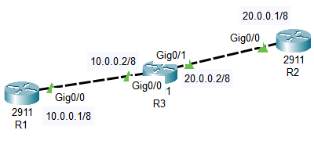
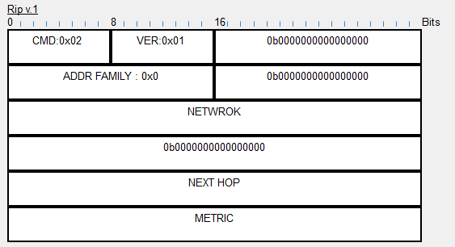
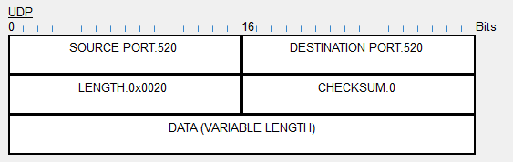
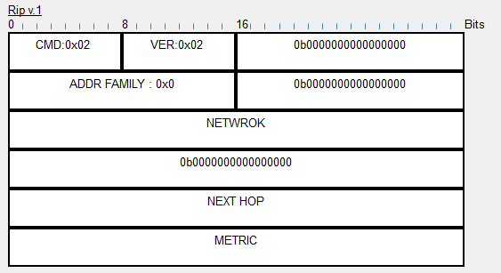
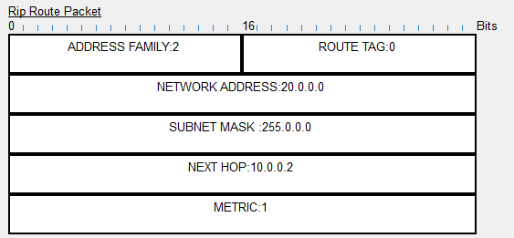

R1、R2、R3在一个AS内
R1和R2分别连接到R3

R1：
Router(config)#interface GigabitEthernet0/0 Router(config-if)#ip address 10.0.0.1 255.0.0.0 Router(config-if)#no shutdown
R2
Router(config)#interface GigabitEthernet0/0 Router(config-if)#ip address 20.0.0.1 255.0.0.0 Router(config-if)#no shutdown
R3
Router(config)#interface GigabitEthernet0/0 Router(config-if)#ip address 10.0.0.2 255.0.0.0 Router(config-if)#no shutdown Router(config)#interface GigabitEthernet0/1 Router(config-if)#ip address 20.0.0.2 255.0.0.0 Router(config-if)#no shutdown
R3
Router(config)#router rip Router(config-router)#version 2 Router(config-router)#network 10.0.0.0 Router(config-router)#network 20.0.0.0
R1
Router(config)#router rip Router(config-router)#version 2 Router(config-router)#network 10.0.0.0
R2
Router(config)#router rip Router(config-router)#version 2 Router(config-router)#network 20.0.0.0
R1
Router#show ip route rip R 20.0.0.0/8 [120/1] via 10.0.0.2, 00:00:21, GigabitEthernet0/0
R2
Router#show ip route rip R 10.0.0.0/8 [120/1] via 20.0.0.2, 00:00:08, GigabitEthernet0/0
R3
R1 ping R2
R2 ping R1
使用模拟测试
R1向R2发送简单报文
通信成功后，继续单步测试，R3会周期性的发送更新报文来更新路由 - builds a periodic RIP update packet
查看RIP报文的封装：Ethernet → IP → UDP → RIP → RIP Route Packet



